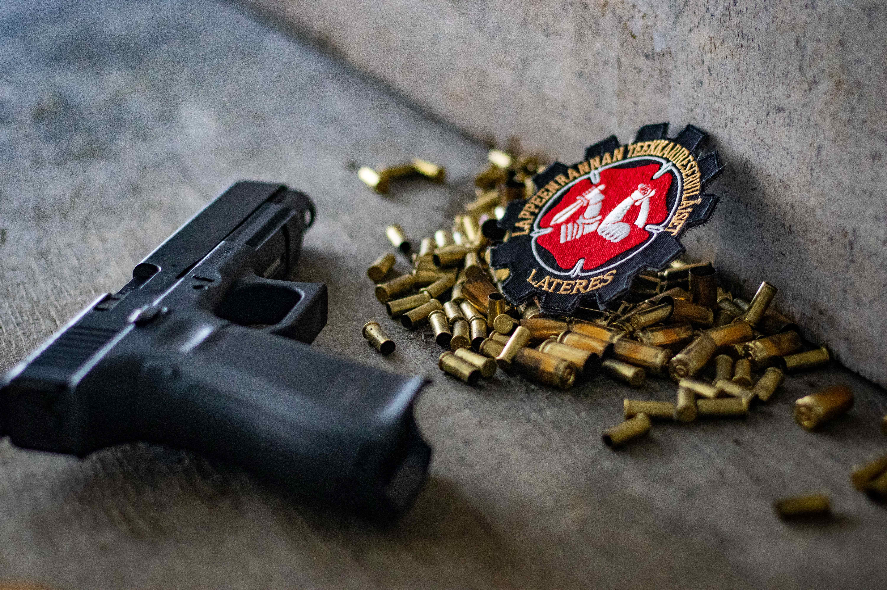
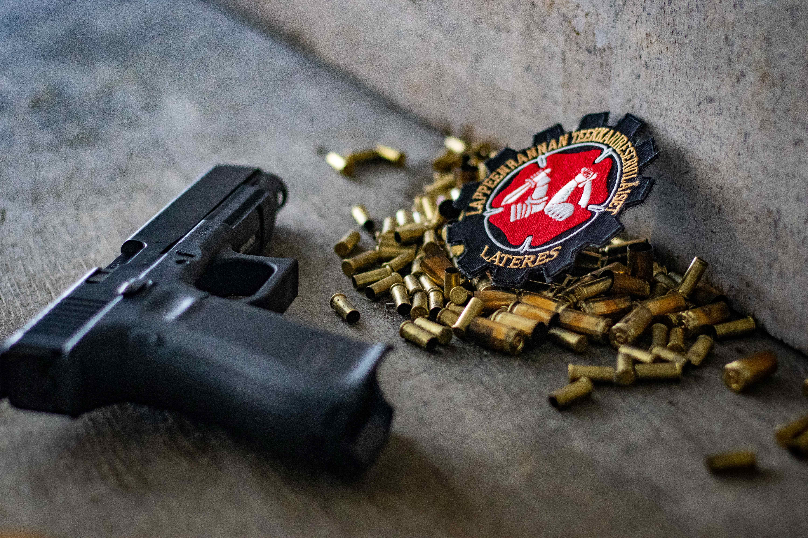

.png) 

Lateres yhdistyksenä
ORUP - Opiskelijain Reserviupseeripiiri ry
Opiskelijain Reserviupseeripiiri ry (ORUP) on yksi Suomen Reserviupseeriliiton (RUL) kahdestakymmenestä piiristä. Piiri toimii valtakunnallisesti ja sen jäsenyhdistykset käsittävät maamme 10 korkeakoulupaikkakuntaa. Piiri poikkeaa muista liiton piireistä juuri valtakunnallisuutensa vuoksi, ja siinä, että henkilö voidaan hyväksyä jäseneksi sotilasarvosta riippumatta. Olit sitten upseeri tai et, olet tervetullut toimintaamme. Lisätietoja tästä.
LaTeRes - Lappeenrannan teekkarireserviläiset ry
Lappeenrannan teekkarireserviläiset ry on ORUP:n ja sitä kautta Suomen Reserviupseeriliiton (RUL) alainen yhdistys, jonka tarkoituksena on ylläpitää isänmaallista henkeä ja sotilastaitoja Lappeen Rantalaisten opiskelijoiden keskuudessa.
Lateresin tapahtumiin ovat tervetulleita kaikki opiskelijat oppilaitokseen, ikään, kansalaisuuteen, sukupuoleen, rotuun, asepalvelushistoriaan tai epäseksuaaliseen suuntautumiseen katsomatta.
Lateres säännölliseen tapahtuma-arsenaaliin kuuluu viikottaiset ammunnat, viikkolenkit, painivuoro monarissa sekä joka toinen viikko kerhoilta jatkosodan aikaisessa konekivääribunkkerissa.